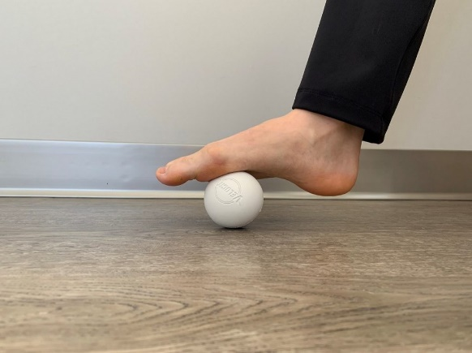

تمرینات اصلاحی چیست
از تمرینات اصلاحی برای درمان التهاب مفاصل به عنوان پیشگیری از آسیب، کنترل درد، پس از ترمیم یا حتی فقط برای استفاده در یک روند برای نگهداری اندام در وضعیت صحیح استفاده میشود. اهمیت تمرینات اصلاحی در داخل یک برنامه تمرینی ارتقا الگوی حرکت و افزایش انعطافپذیری در برابر آسیب است و در نهایت به ورزشکاران امکان میدهد تا به طور مداوم با شدتهای بیشتر تمرین کنند و حجم تمرینات را برای ارتقا ورزش مداوم افزایش دهند. بخش زیر شامل چند مورد از مؤثرترین تمرینات اصلاحی است که میتواند در هر برنامه سلامتی، تناسب اندام یا ورزشی برای کاهش درد مزمن و بهبود عملکرد گنجانده شود.
1. ماساژ با توپ گلف
یکی از رایجترین انحرافات اسکلتی – عضلانی که باعث درد مزمن میشود، استفاده بیش از حد از پا در تمرینات به خصوص تمرینات بدنسازی است. در این وضعیت کف پا صاف میشود و وزن به سمت خط وسط بدن چرخش میکند. استفاده بیش از حد از عضله باعث میشود بافت همبندی که در امتداد پا قرار دارد (فاسیای کف پا) تحریک شده و توانایی عملکرد صحیح خود را از دست بدهد. استفاده بیش از حد از روی عادت نادرست میتواند باعث شود سایر ساختارهای بدن مانند مچ پا، زانوها و رانها لقی ناشی از درست عمل نکردن پا را بگیرند. این میتواند منجر به استفاده بیش از حد، درد و عدم تعادل در آن قسمت از بدن شود.
چگونگی انجام تمرین: یک توپ گلف در زیر پای خود قرار دهید. آن را حداقل به مدت ۳۰ ثانیه تا ۱ دقیقه و هر بار روی نقاط مختلف به عقب و جلو بچرخانید. میتوانید تمرین را به صورت ایستاده انجام دهید و یا به جای توپ گلف با یک توپ تنیس انجام دهید. احتیاط: از فشار زیاد خودداری کنید، زیرا باعث آسیب به پا میشود. چهار عضله چهار سر ران در قسمت فوقانی پا وجود دارد و در اکثر تمرینات مربوط به بدنسازی درگیر هستند.
2. ماساژ عضلات چهار سر ران با فوم رولر

چگونگی انجام تمرین: فوم رولر را بین زمین و ران خود قرار دهید. مناطق دردناک را پیدا کنید و آن قسمت را برای چند ثانیه بر روی فوم رولر نگه دارید و وزن خود را بر روی آن بیندازید تا بافتها آزاد شوند. برای هر پا هر روز حدود ۱ دقیقه این کار را انجام دهید. با خم شدن زانوی پایی که روی رولر است، کشش اضافه کنید. به جای غلتک از توپ تنیس روی ران استفاده کنید. دراز بکشید و توپ را زیر عضلات ران قرار دهید. توپ را در امتداد ران حرکت دهید تا نقاط مختلف گرفتگی آزاد شود.